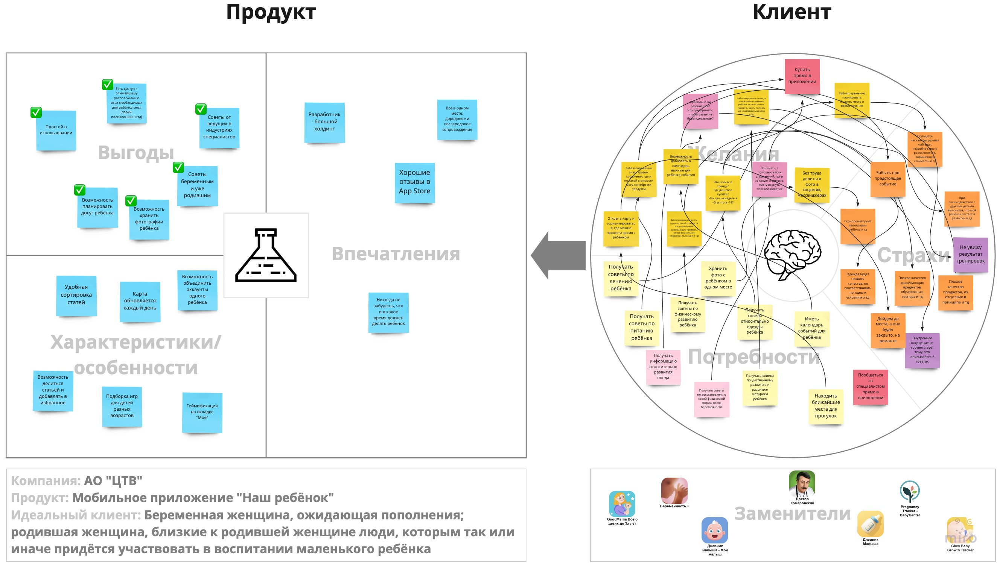
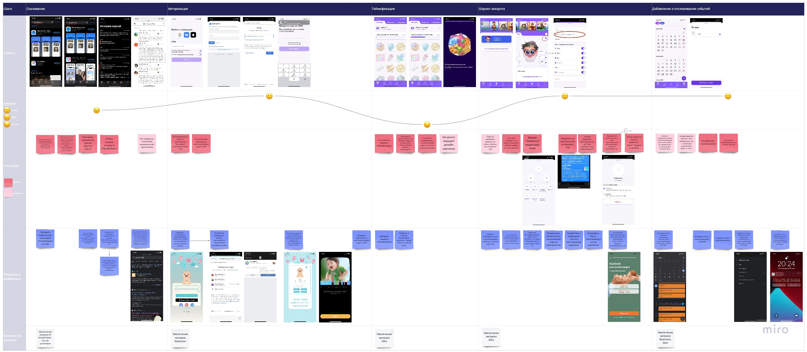
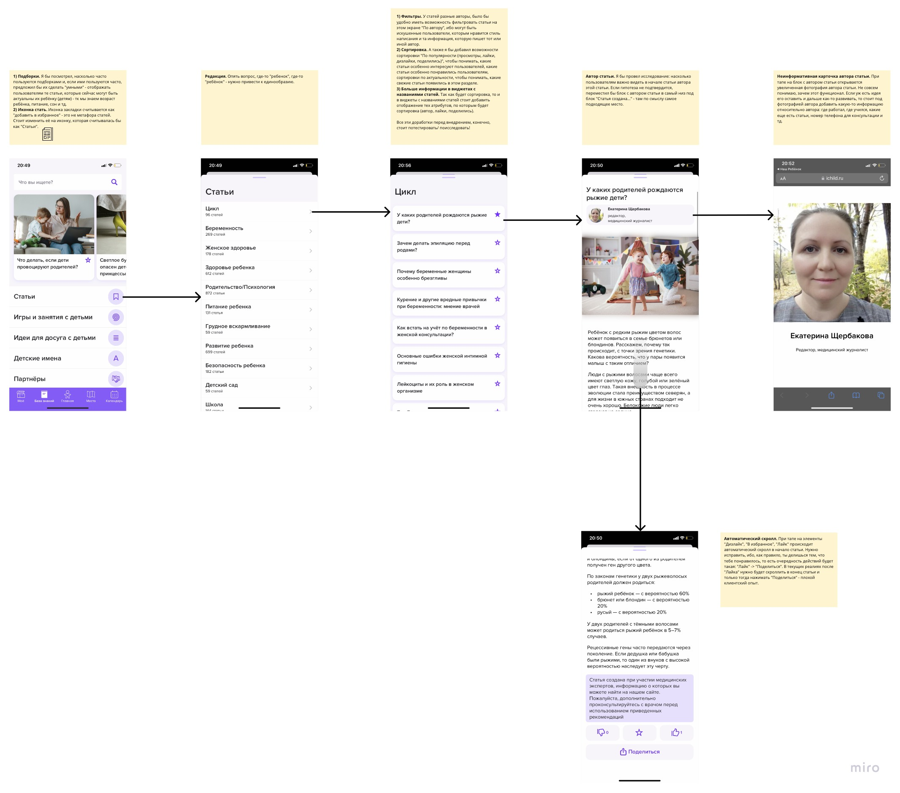
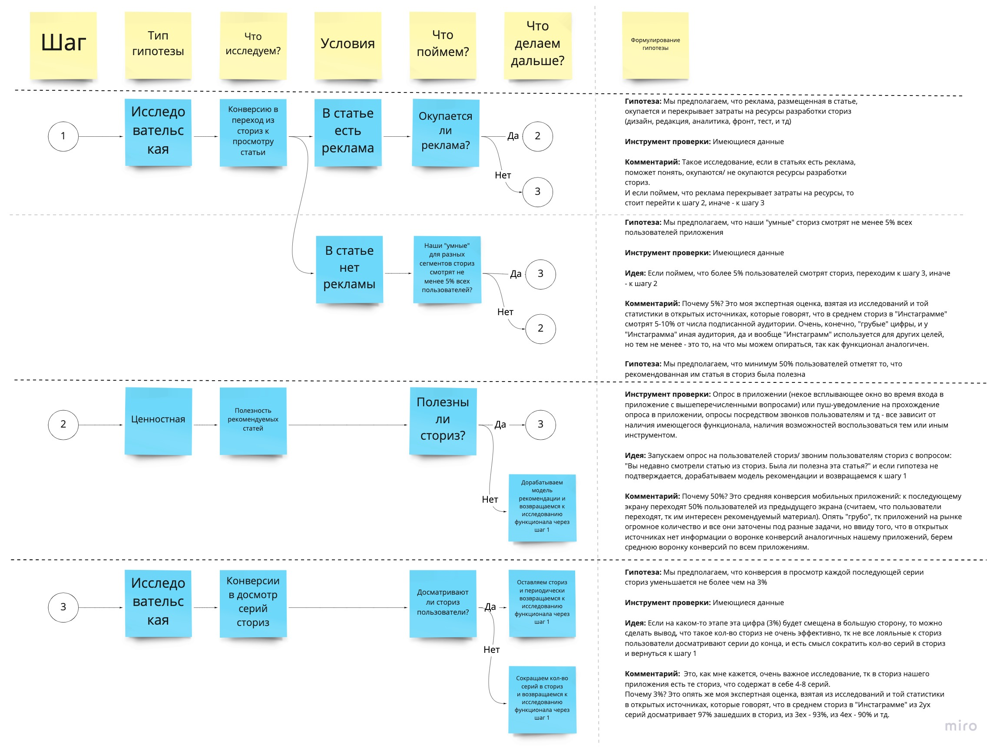

Кейс: Мобильное приложение
Задания для собеседования · Приложение «Наш ребенок»
Контекст
Серия продуктовых задач для позиции в команде мобильного приложения «Наш ребенок» (iOS, Android). Кейс охватывает формулировку ценностного предложения, улучшение функционала, работу с контентом, аналитику метрик.
Ценностное предложение
Как бы вы сформулировали ценностное предложение приложения «Наш ребенок» (iOS, Android)?
Ценностное предложение должно строиться на том, какую потребность потребителя закрывает продукт и какую ценность мы-продукт даём потребителю.
Ниже на карте ценностного предложения (также карта есть на доске Miro), которую я составил по шаблону Алекса Остервальдера, отобразил ключевые моменты для дальнейшего формулирования ценностного предложения. В идеале, конечно, правую часть карты "Клиент" необходимо заполнять по итогам CustDev-интервью с целевым сегментом продукта. Увы, но на мой клич в фэйсбуке "Есть ли здесь молодые мамы и папы или будущие мамы, у которых скоро должен родиться ребёнок? Напишите мне, пожалуйста, - хотел задать пару вопросов!" никто не откликнулся, поэтому я решил построить карту на основе своих ощущений.
💎 Итоговое ценностное предложение:
"Приложение "Наш ребёнок" - эксперт в дородовом и послеродовом развитии вашего ребёнка! С помощью нашего приложения вы сможете:
- в увлекательной игровой форме стать суперпапой,
- спланировать досуг и выбрать место времяпровождения ребёнка,
- получать и делиться советами от ведущих психологов, врачей,
- хранить запечатленные на фотографиях памятные моменты жизни,
- разделять эти моменты с бабушками, дедушками, дядями, тётями."

Карта ценностного предложения приложения "Наш ребёнок" (кликните для просмотра в полном размере)
Продуктовое улучшение
Предложите продуктовое улучшение текущей версии приложения «Наш ребенок», которого на ваш взгляд больше всего не хватает.
"Наш ребёнок" борется с другими приложениями на рынке в категории развития детей, поэтому необходимо предлагать те решения, которые помогут привязать к себе пользователя на различных этапах пути.
📍 Ключевые этапы пользовательского пути:
- Скачивание приложения
- Авторизация пользователя
- Геймификация на вкладке "Моё"
- Фича шэринга аккаунта с другими людьми
- Фича добавления и отслеживания событий в календаре
Ниже представлена карта путешествия клиента (CJM), на которой отображены:
- Эмоции, которые я ощутил в момент прохождения каждого этапа
- Критичные и некритичные проблемы приложения
- Решения и референсы
- Влияние на метрики
🎯 Приоритетные проблемы для решения:
- Минорные правки редакции
- Очень плохие отзывы в Play Market'е
- Не понятны правила геймификации
- Не работает напоминание
- Не работает информирование о начале события
Решение критичных и некритичных проблем поможет увеличить метрики:
- IR (Installation Rate) — количество скачиваний
- Retention — удержание пользователей
- DAU — количество уникальных пользователей за сутки

Customer Journey Map приложения "Наш ребёнок" (кликните для просмотра в полном размере)
Улучшение раздела «Статьи»
Предложите улучшения раздела "Статьи" (База знаний → Статьи) текущей версии мобильного приложения "Наш ребенок" и объясните свой выбор.
Ниже на карте экранов отобразил свои улучшения раздела "Статьи" с детальным описанием каждого предложения.
01 Подборки
Я бы посмотрел, насколько часто пользуются подборками и, если ими пользуются часто, предложил бы их сделать "умными" — отображать пользователям те статьи, которые сейчас могут быть актуальны их ребёнку (питание, сон и т.д.), т.к. мы знаем возраст ребёнка.
02 Иконка раздела
Иконка закладки считается как "Добавить в избранное" — это не метафора статей. Стоит изменить её на иконку, которая считывалась бы как "Статьи".
03 Фильтры
У статей разные авторы, было бы удобно иметь возможность фильтровать статьи на этом экране "По автору", ибо могут быть искушённые пользователи, которым нравится стиль написания и та информация, которую пишет тот или иной автор.
04 Сортировка
Я бы добавил возможности сортировки "По популярности (просмотры, лайки, дизлайки, поделились)", чтобы понимать, какие статьи особенно интересуют пользователей, какие статьи особенно понравились, а также сортировку по актуальности — чтобы видеть свежие статьи в разделе.
05 Больше информации в виджетах
Так как будет сортировка, то и в виджеты с названиями статей стоит добавить отображение тех атрибутов, по которым будет сортировка (автор, лайки, поделились).
06 Автор статьи
Я бы провёл исследование: насколько пользователям важно видеть в начале статьи автора этой статьи. Если гипотеза не подтвердится, переместил бы блок с автором статьи в самый низ под блок "Статьи созданы...", там по смыслу самое подходящее место.
07 Автоматический скролл
При тапе на элементы "Дизлайк", "В избранное", "Лайк" происходит автоматический скролл к началу статьи. Нужно исправить, ибо, как правило, ты делишься тем, что тебе понравилось, то есть очередность действий будет такая: "Лайк" → "Поделиться". В текущих реалиях после "Лайка" нужно будет скроллить в конец статьи и только тогда нажимать "Поделиться" — плохой клиентский опыт.
Важное замечание:
Все эти доработки перед внедрением, конечно, стоит протестировать / поискследовать!

Карта улучшений раздела "Статьи" (кликните для просмотра в полном размере)
Анализ функционала «Сториз»
На главном экране текущей версии приложения "Наш ребенок" реализован функционал сториз, ежедневно обновляемых для каждого сегмента целевой аудитории. Функционал требует постоянных ресурсов (подготовка контента, дизайн материалов, размещение, поддержание и пр.). Ваша задача состоит в том, чтобы выяснить, нужно ли оставлять данный функционал. Как бы вы подходили к анализу этой задачи при условии, что в вашем распоряжении все необходимые вам аналитические данные?
Ниже представлена карта исследований с последовательностью действий для анализа работающего функционала «Сториз».
📊 Структура карты исследований:
Шаги
Последовательность действий
Тип гипотезы
Классификация гипотез
Что исследуем?
Описание того, что хотим исследовать
Условия
Условия, от которых зависят дальнейшие шаги
Что поймём?
Что поймём по итогам исследования
Что делаем дальше?
Действия при подтверждении/опровержении гипотезы
Формулирование гипотезы
Описание гипотез, инструменты проверки, идеи и комментарии
🎯 Ключевые этапы исследования:
Шаг 1: Исследовательская гипотеза
Исследуем конверсию в переход из сториз к просмотру статьи. Проверяем, окупается ли реклама (если она есть в статье).
Шаг 2: Ценностная гипотеза
Исследуем полезность рекомендуемых статей. Проверяем, полезны ли сториз для пользователей (минимум 50% должны отметить полезность).
Шаг 3: Исследовательская гипотеза
Исследуем конверсии в досмотр серий сториз. Проверяем, досматривают ли пользователи сториз до конца (конверсия не должна падать более чем на 3% на каждой серии).
💡 Важное замечание:
Как итог, я бы начал исследование с шага 1 и придерживался бы тех шагов, что описал на карте. Также, погрузившись в бóльшие детали проекта (будет ли модель монетизации статей в бизнес-модели продукта, будут ли ограничения на ресурсы и т.д.), внёс бы изменения в карту исследований. И даже убедившись в том, что наши сториз приносят ценность пользователям и доход продукту, не стоит прекращать исследования и отслеживать метрики — важно всегда «держать руку на пульсе» фичи и продукта.

Карта исследований для анализа функционала «Сториз» (кликните для просмотра в полном размере)